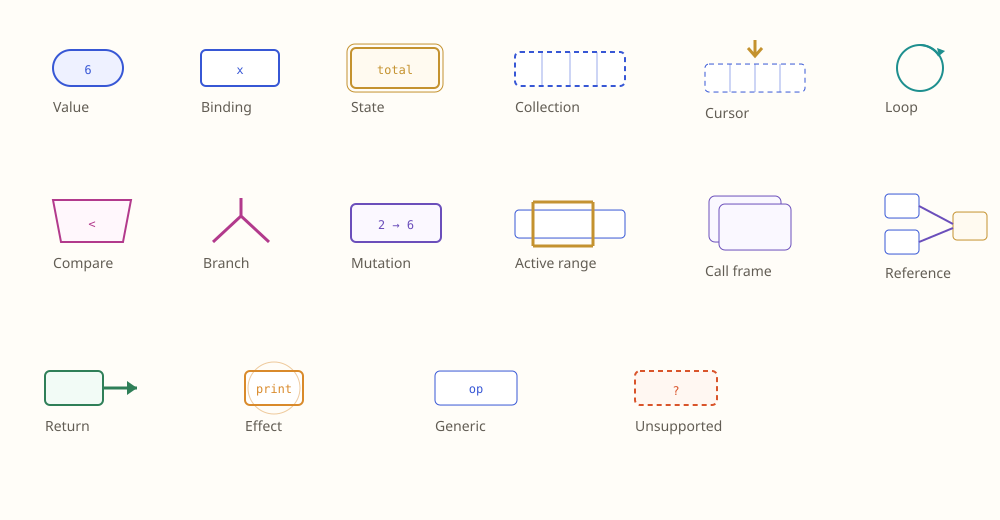

Structural Code Lens · Implementation Pack
One grammar. Three learner views.
A detailed execution package for consolidating Flow, State, Guided Trace, and Graph Inspector around one derivable symbol system.
Recommended sequence: semantic foundation → Flow polish → symbol registry → new primitives → State → Guided Trace → DSA expansion.
